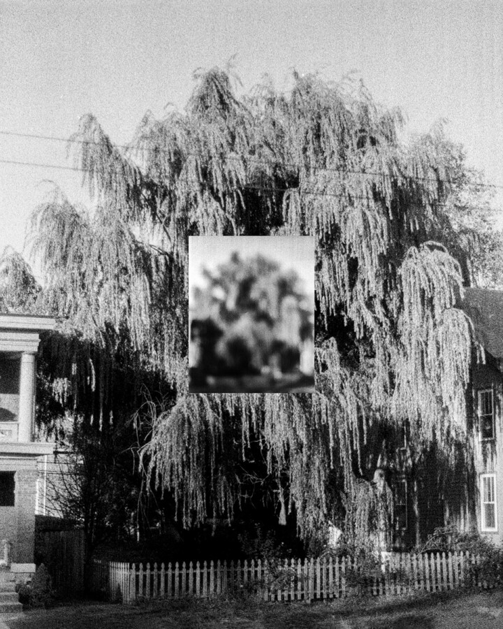

Jesse Ly: try, take time – take time, try
Filter Photo is pleased to present try, take time – take time, try, a solo exhibition by Asian-American artist Jesse Ly. try, take time – take time, try is a body of developing works compiling photographic, sculptural, and installation approaches concerned with the dualities of care and labor. Through considerations of balancing the tenderness alongside the rigidity and rage needed to cause change manifests via pictorial sequencing and referential iconography. The works make time for concerns related to setting affirmations, safe keeping, protection, and preparedness – to realize possibilities and ideals made within dreams.
One’s field of view exists and transcends multitudes – blending degrees of needed softness and conviction. Encapsulating this disparateness delves into the functionality of these simultaneously differing but similar emotions and approaches. The work calls upon these methods of making to look into and allude how one can harness the needed firmness to create direction with the leniency and care needed to hold space for compassion.